I made Arcanoid for a Game Design assignment in my second year of University. It has been a while since I made Arcanoid, so this will be a fairly vague recount of the process. I had a lot of fun making it and it was one of the most fun assignments I've done at University so far.
I used Blender to make some very simple models and GIMP for the textures, because I wanted to make the game 3D to look more visually interesting. There isn't really much more to say about this, the stage was the most complex model and it was a cuboid with a chunk taken out of it. |
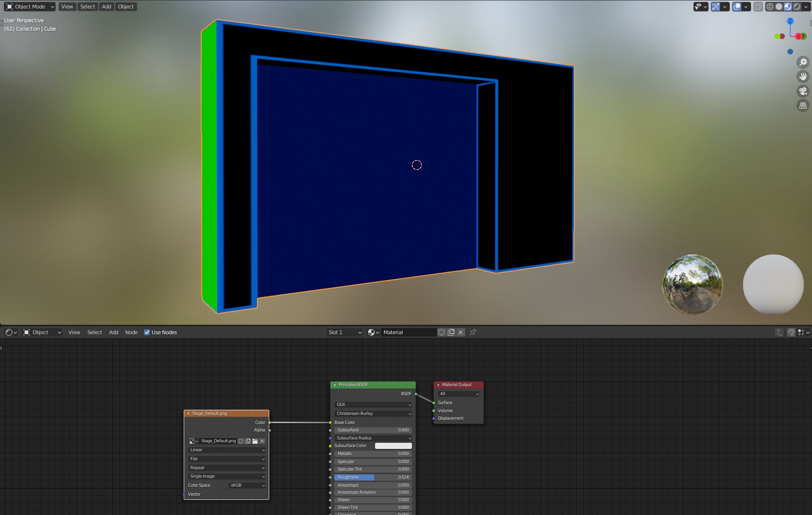 |
| 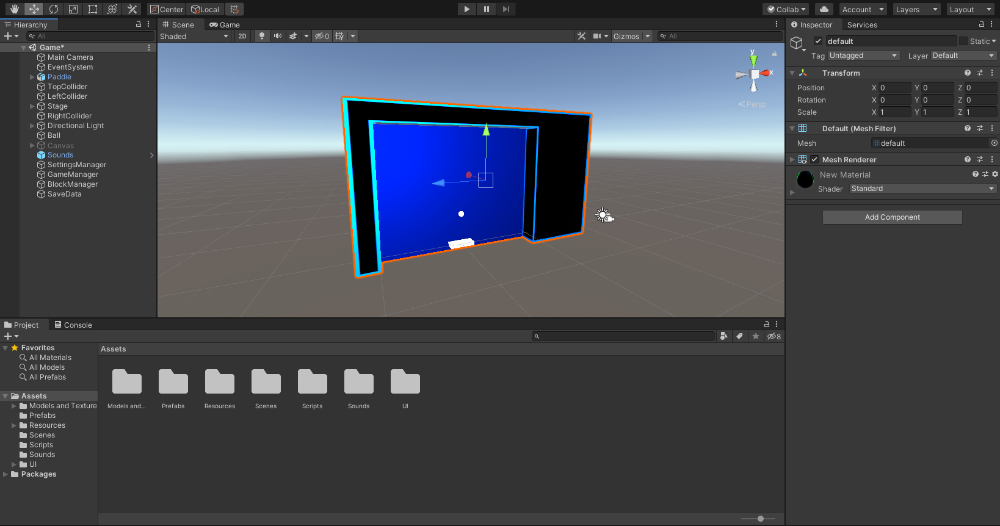 | Once I laid out some of the models in Unity, I could then easily program the paddle to move side-to-side with the 'A' and 'D' keys within the stage, and then I had the fun task of coding 2D ball physics. |
The ball physics I wrote were very simple and probably shouldn't even be referred to as "Physics", but basically consists of me setting the ball to it's start point at the start of the game and every time it went off the screen. Then, each stage the ball would pick a random direction to travel and move at a set speed. The collisions were handled by taking the other objects collider position to work out which side of the object was hit, so I could reverse the ball's movement vector X or Y axis accordingly. I also used the collider's width and height to determine if the ball hit a corner, and then I could choose which direction the ball should then move in. If the ball collided with the paddle I took in variables like the direction the paddle was moving in and the distance the ball is from the paddle's center to determine the speed and direction the ball should be moving post collision. This is the bare minimum for making a 2D ball to be "ball-like" for games like Arcanoid or Pong where I didn't need to worry about gravity, friction or complex/realistic bouncing.
For the obstacle blocks, I had planned 3 levels of block, where the higher level blocks would turn into lower level blocks before being destroyed as they were hit with the ball, similar to the way the blocks in Peggle work. This was fairly simple to implement, but I also wanted to be able to spawn blocks in in different patterns which would allow me to make different stages that could get harder with more, and higher level blocks to hit. This could be done in several ways, but I ended up making a grid system where I recorded the coordinates of each potential block position in a 2D array, and could also have each stage of blocks as a 2D array of the same dimensions, with numbers to indicate which level of block to spawn in that grid position. This method worked well for my use case as it was easy to implement and was very customisable for each stage. |
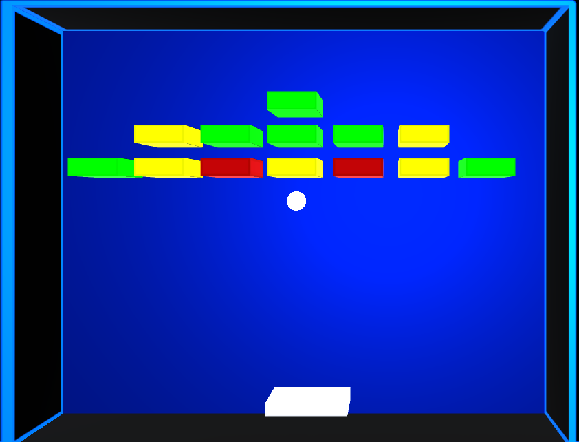 |
| 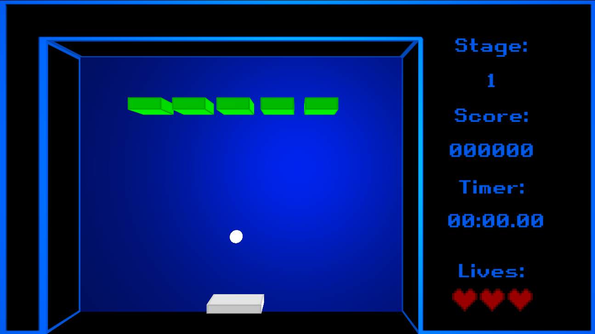 | The UI I made was pretty simple, just a stage counter so the user knows what stage they're on, a score counter to increment every time a block is hit/destroyed, a timer and a set amount of lives. The game would end when the user finished all the stages or ran out of lives. |
The main menu I designed was very simple and included a customisation menu, a leaderboard, a settings menu, and a quit to desktop button. |
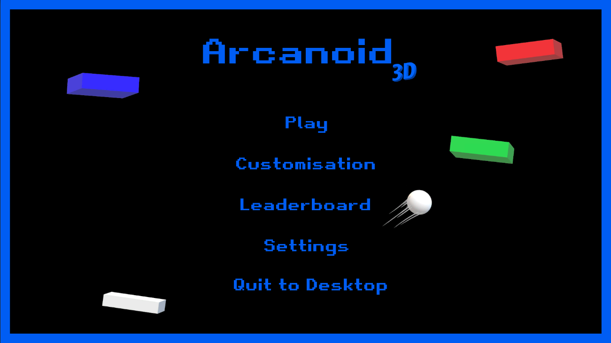 |
| 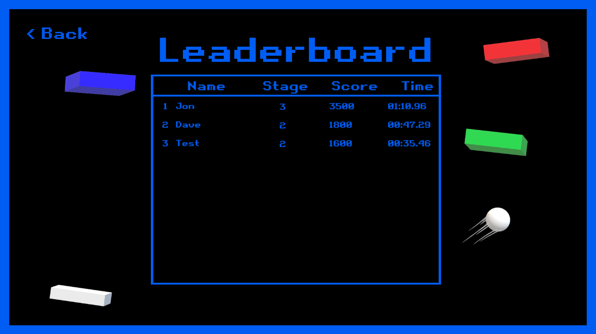 | At the end of the game, the user is prompted to enter their name, and if their score, time and then lives is better than their current high score, the high score would be updated, saved into JSON and able to be seen on the main menu, along with other users who have recorded their high scores. There is no networking, so the users shown are just from the same machine. |
The settings menu was very simple, only options for music and FX volume, game resolution and a fullscreen checkbox. To save and load settings between scenes and game sessions, I used Unity's PlayerPrefs system which works best with saving individual variables as opposed to larger amounts of data, such as a whole leaderboard table. |
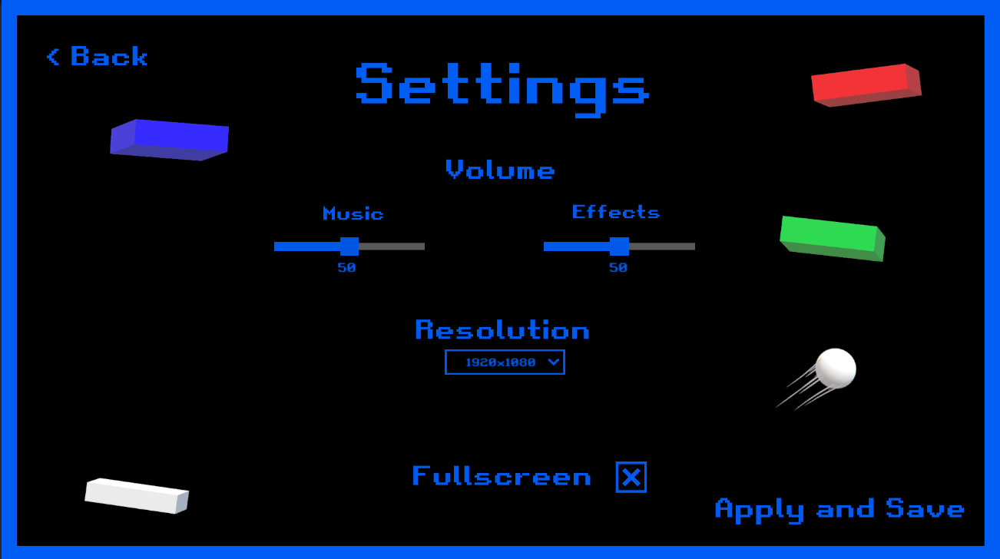 |
| 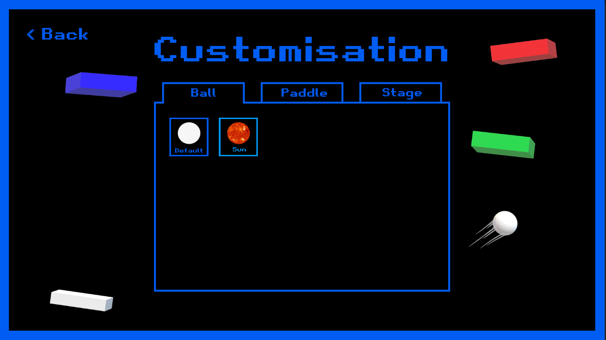 | The customisation menu allows users to change the apperance of their ball, paddle and stage background. I didn't add many options as I just wanted to get the functionality there so I could add more in the future if I wanted to. |
This is what the customisation options look like in-game. This is also saved through Unity's PlayerPrefs. |
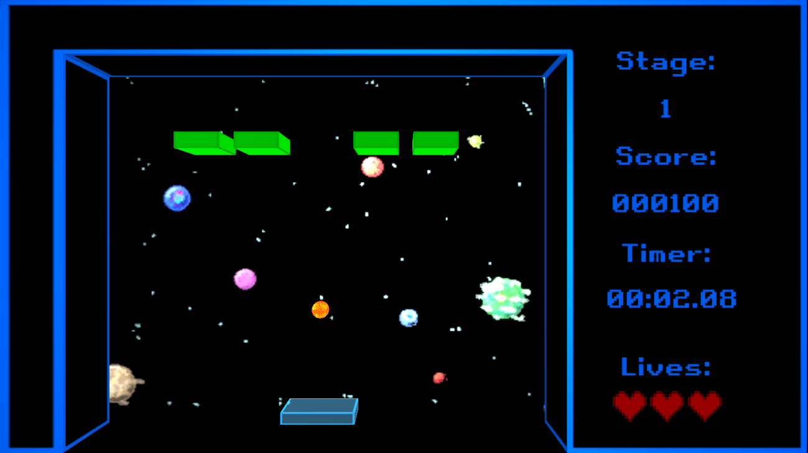 |
My second assignment for this module was to incorporate a game AI into the game. I decided to make that AI a direct opponent to the player in a head-to-head mode where the player is in direct competition with the AI for the blocks on the stage. I decided to use 2 different decision trees for two different difficulties, easy and hard. The easy AI will be active for the first half of the game and just hits it's own ball randomly and hits the player's ball if it is close. The hard AI will predict where it's ball will be when it reaches the paddle and will move to that spot to then hit it to the side where most blocks on the stage are to have a better chance of increasing it's score. It will also move out of the way of the player's ball if it can to inconvenience the player more.
| 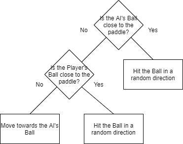 | 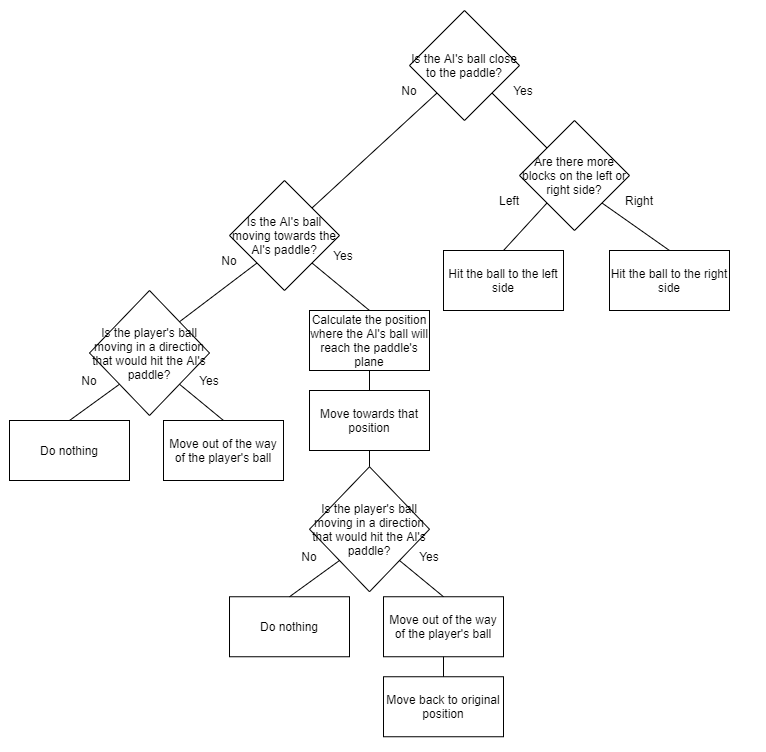 |
| 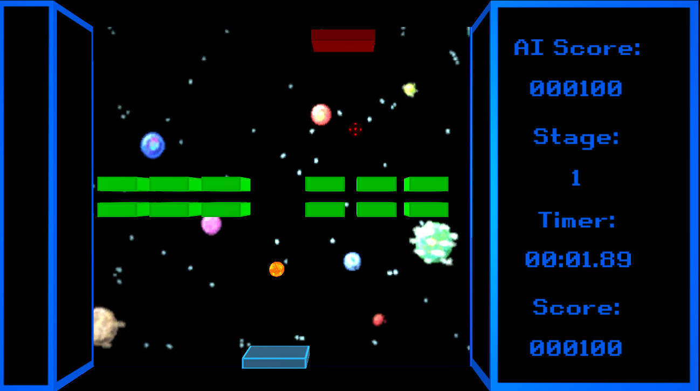 | The AI isn't particuarly intelligent, even on the hard AI, however, it is good enough that the player feels like they're playing against an opponent that is fairly challenging so it works well for the gameplay. |